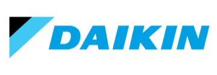

Introducing PartsConnect
Find compatible parts sold by your suppliers.
Bluon does the cross-reference research, finding the correct part and every known replacement, then connects you to the distributors you already use for a quote or a fast pickup. Stop guessing. Stop calling.
See how it worksWorks with the suppliers you already use
